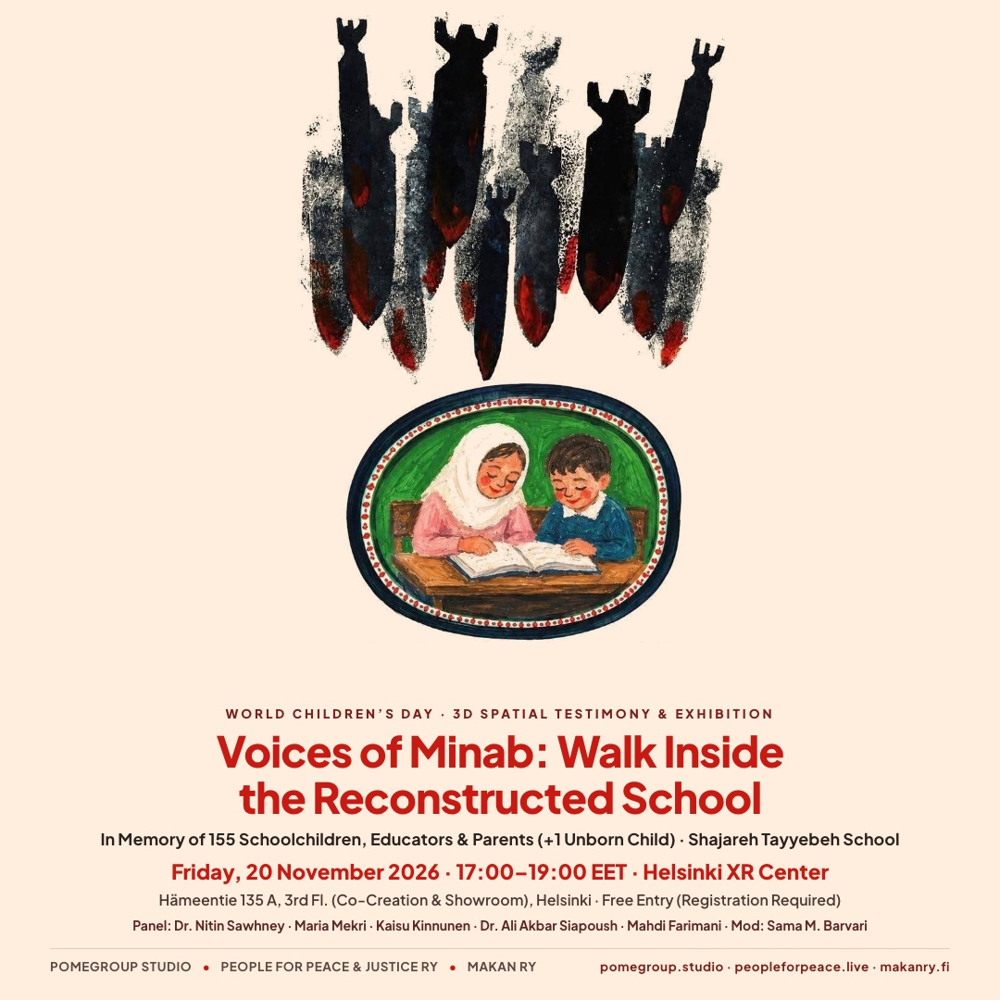
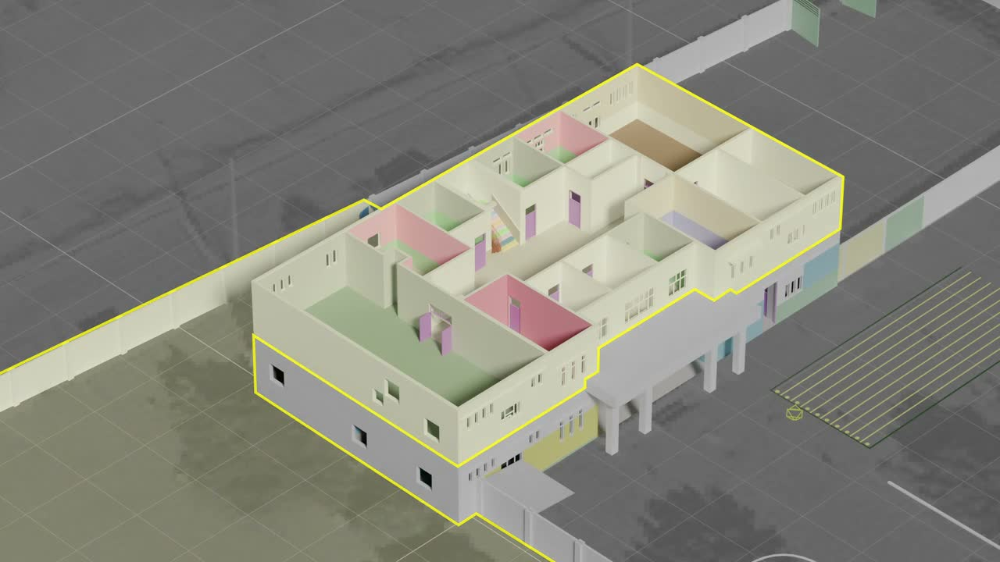
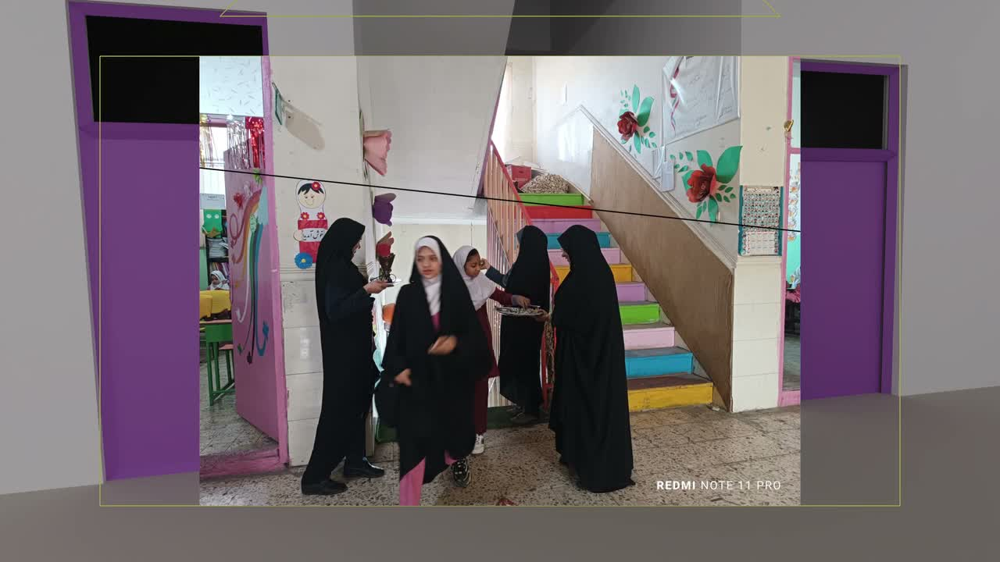
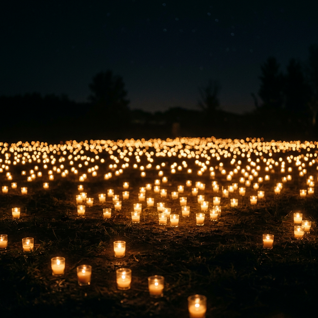
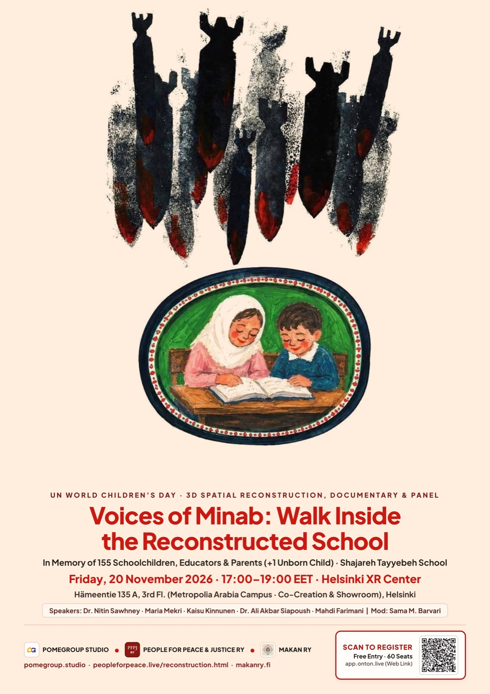
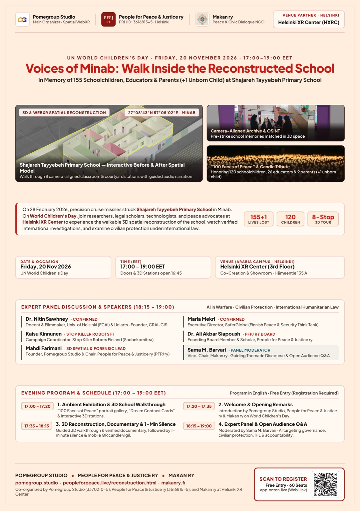
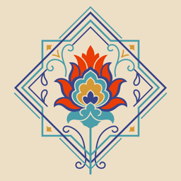

Upcoming Helsinki Event · Registration Open
UN World Children’s Day · 20 November 2026
Voices of Minab: Walk Inside the Reconstructed School
On 28 February 2026, precision cruise missiles struck Shajareh Tayyebeh Primary School in Minab, taking the lives of 156 civilians—including 120 schoolchildren aged 6–12 and 26 educators. Join us in Helsinki or online on UN World Children’s Day to step inside the reconstructed 3D school, watch verified international investigations, and examine how children and schools must be protected in war.
Free entry · 60 in-person seats + live online stream · Program in English (EN / FI / FA 3D audio & subtitles)
·
View Partner Listing on Makan ry ↗
-
Reserve Your Free Spot
Register in 30 seconds on Web (ONTON) or Telegram. Entry is free for students, researchers, peace advocates, and the public (60 seats in Helsinki + online stream).
-
Arrive at 16:45 for the 3D Walkthrough
Doors and interactive 3D stations open at 16:45 EET on the 3rd floor of Helsinki XR Center—or explore the reconstructed school right now in your browser.
-
Join the Screening, Vigil & Panel
Watch verified visual investigations (EN/FI subtitles), honor the 156 victims in a 1-minute silence, and ask questions during the 18:15–19:00 expert panel.
Key Event Details
When, Where & How to Attend
Hosted at Metropolia University of Applied Sciences’ Arabia Campus in Helsinki, with international online access automatically matched to your local time zone.
Friday, 20 November 2026
Observed globally as UN World Children’s Day—dedicated to protecting children’s lives, dignity, and right to safe education.
17:00 – 19:00 EET
Doors & 3D WebXR stations open at 16:45 EET (UTC+2).
Helsinki (Europe/Helsinki): 17:00 – 19:00 EET
Helsinki XR Center (HXRC)
3rd Floor Co-Creation & Showroom, Hämeentie 135 A, 00560 Helsinki (Metropolia Arabia Campus · Tram 6 & 8).
Free Entry · Hybrid Access
60 in-person seats + live online stream. Stage program in English; 3D audio tour and documentary subtitles in English, Finnish, and Persian.
Evening Run of Show
Program Schedule (17:00 – 19:00 EET)
A calm, structured two-hour evening uniting spatial evidence, investigative documentary film, remembrance, and international law dialogue.
-
16:45 – 17:00 Doors Open · 15 min
Doors Open, Guest Check-In & Early 3D Station Access
Arrival at the 3rd Floor Co-Creation & Showroom at Helsinki XR Center, welcome coffee and tea, and early access to interactive 3D walkthrough stations.
-
17:00 – 17:20 Part 1 · 20 min
1. Ambient Exhibition & 3D School Walkthrough
Explore the “100 Faces of Peace” portrait gallery, “Dream Contrast Cards”, and interactive WebXR/3D stations reconstructing Shajareh Tayyebeh Primary School with trilingual audio narration (EN / FI / FA).
-
17:20 – 17:35 Part 2 · 15 min
2. Welcome & Opening Remarks
Joint opening address by Pomegroup Studio, People for Peace & Justice ry (PFPJ ry), and Makan ry framing the evening on UN World Children’s Day.
-
17:35 – 18:15 Part 3 · 40 min
3. Guided 3D Reconstruction, Documentary Screening & 1-Minute Silence
Big-screen walkthrough of the Before & After 3D school model and curated screening of verified international investigations (Sky News, France 24, BBC News) and survivor testimonies (EN/FI subtitles), followed by a 1-minute silence and mobile QR candle vigil.
-
18:15 – 19:00 Part 4 · 45 min
4. Expert Panel Discussion & Open Audience Q&A
Moderated by Sama M. Barvari with Dr. Nitin Sawhney, Maria Mekri, Kaisu Kinnunen, Dr. Ali Akbar Siapoush, and Mahdi Farimani—examining AI targeting governance, digital dehumanization, civilian immunity under international humanitarian law, and accountability pathways.
18:15 – 19:00 EET · Non-Partisan Academic, Peace & Legal Stage
Confirmed Panelists & Moderator
Scholars, Finnish peace and arms-control leaders, and forensic researchers examining automated warfare, civilian protection, and international humanitarian law.
Dr. Nitin Sawhney
Docent & Filmmaker, Univ. of Helsinki (FCAI) & Uniarts · Founder, CRAI-CIS
Leads Critical AI & Crisis Interrogatives research examining automated targeting failures, crisis media, and civilian harm in contemporary warfare.
Maria Mekri
Executive Director, SaferGlobe (Independent Finnish Peace & Security Think Tank)
Specializes in arms export oversight, responsible security governance, and protecting civilians in conflict-affected regions.
Kaisu Kinnunen
Campaign Coordinator, Stop Killer Robots Finland / Sadankomitea
Delivers a focused presentation on digital dehumanization, AI decision-support systems in warfare, and meaningful human control over the use of force.
Dr. Ali Akbar Siapoush
Founding Board Member & Scholar, People for Peace & Justice ry (PFPJ ry)
Addresses the humanitarian and historical imperative of safeguarding schools and cultural sanctuaries under international law.
Mahdi Farimani
Founder, Pomegroup Studio & Chair, People for Peace & Justice ry (PFPJ ry)
Presents the WebXR 3D architectural reconstruction of Shajareh Tayyebeh School, satellite chronology, and open-source targeting verification.
Sama M. Barvari
Vice-Chair, Makan ry · Civic Dialogue & Human Rights Advocate
Moderates the thematic panel discussion and guides the open floor Q&A with the Helsinki and online audience.
Inside the Exhibition
What You Will Experience & Official Event Posters
Preview the interactive 3D reconstruction online today or download the print-ready A4 posters to share with colleagues, university departments, and civic networks.

Walkable 3D School Model
Move freely through the schoolyard assembly lines, ground-floor classrooms, and upper hall with a Before & After timeline scrubber and EN/FI/FA voiceover.

Pre-Strike Archival Hotspots
Inspect verified pre-strike school photographs and international visual investigations matched directly onto the 3D geometry where they were recorded.

Portrait Gallery & Candle Vigil
Honor the documented portraits, names, and stories of the 120 schoolchildren and 26 educators, concluding with a collective World Children’s Day vigil.

Official Cover Poster (Heritage Artwork Edition)
A4 Print & Digital Display · Includes Web Registration QR
Open Cover Poster ↗

Official Program & Speakers Poster
Full 17:00–19:00 EET Run-of-Show & Confirmed Panel Lineup
Open Program Poster ↗
Coalition & Institutional Credits
Co-Organizers & Venue Partner
Jointly organized in Helsinki by three registered Finnish entities committed to open-source spatial documentation, international humanitarian law, and peaceful civic dialogue.
Pomegroup Studio
Business ID (Y-tunnus): 3370210-5Main Organizer & Spatial WebXR Partner (Smart Monshi Oy, Helsinki). Engineered the real-time 3D architectural reconstruction and camera-aligned archival tour.
People for Peace & Justice ry
Business ID (Y-tunnus): 3616815-5Lead Human Rights & Forensic Documentation NGO (Helsinki, Finland). Compiles the 10-chapter factual determination, 18 legal precedents, and universal jurisdiction filings.

Makan ry
Business ID (Y-tunnus): 3599693-6Finnish Peace & Civic Dialogue NGO. Leads community outreach, the “100 Faces of Peace” portrait exhibition, and moderated civil-society dialogue.